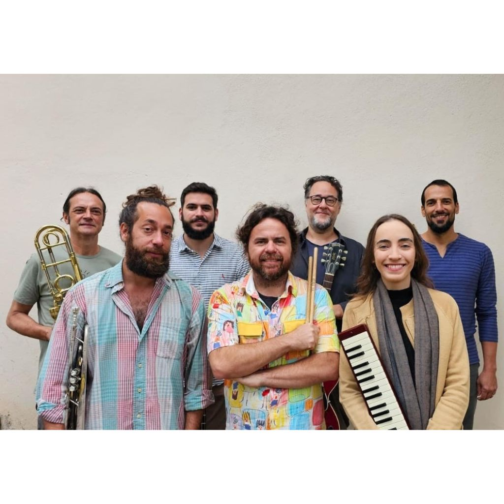
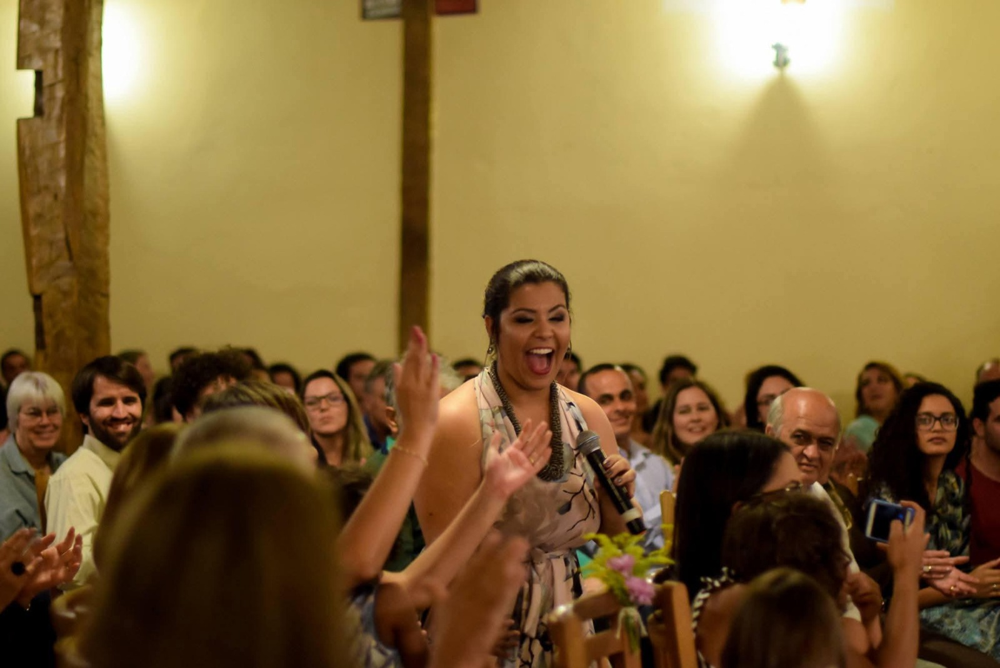
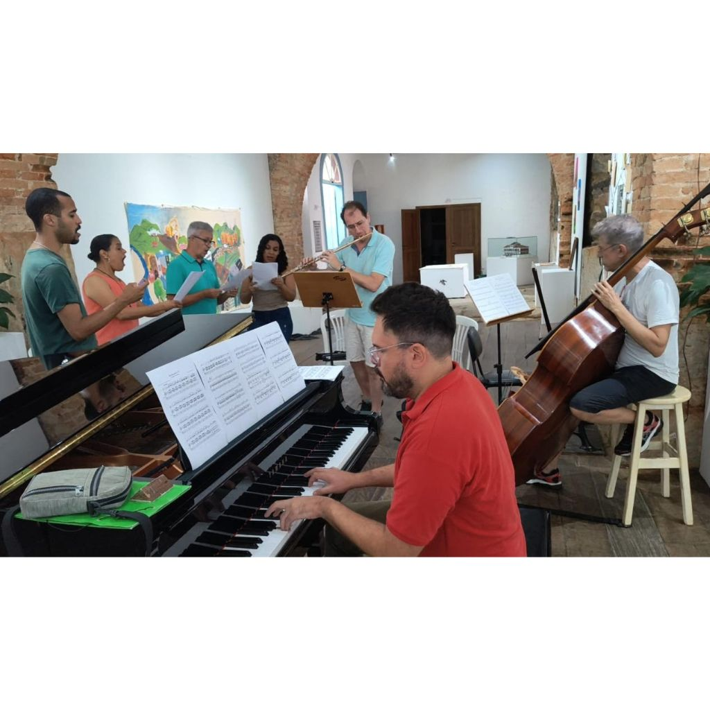

Criação e experimentação em música instrumental são nossas vertentes, com ventos sonoros que passam por diferentes estilos, em arranjos inéditos de obras autorais e de compositores renomados da música brasileira e mundial.
Creation and experimentation in instrumental music are our strands, with sound winds that move through different styles, in unprecedented arrangements of original works and renowned composers of Brazilian and global music.

Natural de São João del-Rei, enverga as tradições culturais e musicais da terra, com um repertório calcado em uma MPB refinada e em sua potente energia vocal e pessoal que entrega em suas performances uma experiência densa e repleta de significados.
Born in São João del-Rei, she embodies the cultural and musical traditions of the land, with a repertoire based on refined Brazilian Popular Music (MPB) and her powerful vocal and personal energy, delivering a dense and meaningful experience in her performances.

É formada por professores, técnicos e alunos da UFSJ, UFOP, UFMG e do Conservatório Estadual de Música Padre José Maria Xavier de São João del-Rei. Este grupo se dedica a pesquisas e projetos artísticos centrados nos ricos acervos musicais históricos da Região das Vertentes em Minas Gerais.
Formed by professors, technicians, and students from UFSJ, UFOP, UFMG, and the Padre José Maria Xavier State Conservatory of Music in São João del-Rei. This group is dedicated to research and artistic projects centered on the rich historical musical collections of the Vertentes Region in Minas Gerais.
Recital Comentado
O grupo musical e o projeto inspiram-se no conceito histórico dos "Partidos da Música" ou "Companhias da Música", que no século XIX eram agrupamentos musicais essenciais para a vida cultural e religiosa da região de São João del Rei, formados muitas vezes por famílias de músicos que encontravam no ofício da performance e do ensino da música uma forma de inserção e distinção social.
O projeto propõe oficinas de instrumentos e canto para músicos da comunidade e recitais comentados em um formato que combina a performance musical com a contextualização da história social da música na região, a trajetória dos compositores, e as práticas de performance da época. Uma característica inovadora destes recitais comentados é a utilização de reduções para piano e instrumentos solistas/voz de obras originalmente orquestrais, uma estratégia que não apenas viabiliza a performance em espaços com infraestrutura variada, mas também dialoga com práticas históricas de difusão musical.
No repertório estão obras sacras e camerísticas do século XIX, com ênfase em compositores mineiros como Padre José Maria Xavier e Presciliano José da Silva, cujas obras refletem a intensa atividade musical e o papel social dos músicos na sociedade oitocentista mineira. Além disso, obras dos compositores cariocas Francisco Manuel da Silva e Lino José Nunes retratam a intensa ligação das cidades históricas mineiras com o Rio de Janeiro, capital do Império no século XIX.
Ao levar este repertório e conhecimento às cidades de São João del-Rei, Ouro Preto e Belo Horizonte o projeto busca a valorização do patrimônio imaterial mineiro.
Commented Recital
The musical group and project are inspired by the historical concept of the "Partidos da Música" or "Companhias da Música", which in the 19th century were essential musical groups for the cultural and religious life of the São João del Rei region, often formed by families of musicians who found in the craft of performance and music teaching a form of social insertion and distinction.
The project proposes instrument and singing workshops for community musicians and commented recitals in a format that combines musical performance with the contextualization of the social history of music in the region, the trajectory of the composers, and the performance practices of the time. An innovative feature of these commented recitals is the use of piano reductions and solo instruments/voice for originally orchestral works, a strategy that not only enables performance in spaces with varied infrastructure but also dialogues with historical practices of musical dissemination.
The repertoire includes sacred and chamber works from the 19th century, with an emphasis on composers from Minas Gerais such as Padre José Maria Xavier and Presciliano José da Silva, whose works reflect the intense musical activity and the social role of musicians in 19th-century Minas Gerais society. In addition, works by Rio de Janeiro composers Francisco Manuel da Silva and Lino José Nunes portray the intense connection between the historic cities of Minas Gerais and Rio de Janeiro, capital of the Empire in the 19th century.
By bringing this repertoire and knowledge to the cities of São João del-Rei, Ouro Preto, and Belo Horizonte, the project seeks to value the intangible heritage of Minas Gerais.